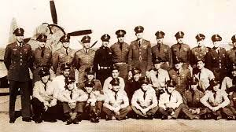

Conoce al Escuadrón 201 y el papel que tomó México durante la Segunda Guerra Mundial; desencadenando la
liberación Filipina y que el Servicio Militar se convirtiera en una obligación para todos los mexicanos.
Antes de la formación del Escuadrón 201, México había mantenido una posición neutral durante la Segunda
Guerra Mundial.
Sin embargo, después de que submarinos alemanes hundieran dos buques mexicanos -el Potrero del Llano y el
Faja de oro-, el gobierno, encabezado por el entonces presidente, Manuel Ávila Camacho, declaró la guerra
a las Potencias del Eje.
Los resultados fueron la liberación de Filipinas, el deceso de algunos pilotos mexicanos y la imposición
del servicio militar obligatorio.
México declara la guerra
Era la Segunda Guerra Mundial y México se había mantenido al margen de la guerra, sin embargo, cuando dos buques mexicanos “El Potrero del Llano”
y “El Faja de oro”, que se dirigían hacia los Estados Unidos, fueron hundidos por unidades alemanas, la especulación sobre una posible invasión
hacia nuestro territorio se apoderó del país.
La situación era crítica, se respiraba tensión por todo México. El gobierno optó por lanzar un documento de protesta al Ministerio de Relaciones
Exteriores de Suecia, quien lo haría llegar a Italia, Alemania y Japón.
El documento de protesta tenía como objetivo que las Potencias del Eje indemnizaran los daños y que acordaran no volver a atacar unidades mexicanas.
Sin embargo, las Potencias del Eje no solo no respondieron durante el plazo establecido -una semana-, sino que continuaron hundiendo buques mexicanos.
La respuesta de las Potencias del Eje nunca llegó; así que el presidente Manuel Ávila Camacho optó por una solución determinante, México entraría a la
Segunda Guerra Mundial.
El gobierno mexicano se unió a los Aliados -Gran Bretaña, Estados Unidos, Francia y la Unión Soviética y le declaró la guerra a las Potencias del Eje
Alemania, Japón, Italia-. Fue en este periodo cuando se instauró el servicio militar como obligatorio.
El servicio militar se vuelve obligatorio en México
Después de que México declarara la guerra, la movilización militar y aérea no se dio inmediatamente, pues Estados Unidos se opuso a las acciones militares
de contingentes mexicanos.
Fue prácticamente al final de la Segunda Guerra cuando un grupo de 290 efectivos, el Escuadrón 201; única Fuerza Aérea Expedicionaria Mexicana (FAEM); que
combatió de manera activa en esta guerra con misiones verdaderamente peligrosas; como el bombardeo en picada, el ametrallamiento de posiciones japonesas y
de convoyes en movimiento.
Antes de ser enviados al enfrentamiento, el Escuadrón 201 había sido enviado a Norteamérica para entrenarse con el ejército estadunidense.
Es así como los miembros de este contingente formaron parte de la Sección 5 de la Fuerza Aérea de los Estados Unidos y de los Aliados en el Pacífico.
Los miembros del Escuadrón 201 sabían que se enfrentarían a un enemigo terriblemente poderoso, como prueba de ello, tenemos el testimonio del veterano
Fernando Nava Musa, quien contó que durante el viaje, un cocinero estadounidense les dijo “too young to die”, porque sabían que los japoneses eran un enemigo
demasiado poderoso y fuerte. Nava creía que no les esperaba otra cosa más que la muerte.
El final de la Segunda Guerra Mundial
Pese a la sensación de muerte que permeaba en el Escuadrón 201, su combate duró aproximadamente seis meses, pues se concretó la liberación de las Filipinas
de la ocupación japonesa y además, tuvieron lugar los bombardeos a Japón, lo que provocó la rendición de las fuerzas niponas y posteriormente el final de la-
Segunda Guerra Mundial.
Los soldados mexicanos del escuadrón 201 que murieron fueron conocidos como las “Águilas caídas” y les fue erigido un monumento en Chapultepec; conocido
como el Monumento a las Águilas Caídas o la Tribuna Monumental.
Una vez terminada la guerra, en 1945, la Secretaría de la Defensa Nacional (SDN) declaró que la FAEM quedaba oficialmente desintegrada, así que las unidades
quedaban a disposición del Estado Mayor.
Además, se creó la Bandera del Ejército Mexicano, Fuerza Aérea Expedicionaria, para conmemorar la participación de las unidades mexicanas y que actualmente
se encuentra resguardada en la Sala de Guardia del Museo Nacional de Historia del Castillo de Chapultepec.
Es así como concluyó la participación del Escuadrón 201 en la Segunda Guerra Mundial, con el deceso de algunos héroes mexicanos, la liberación de Filipinas y-
el final de aquella enorme y terrible guerra.
Bibliografia
Bibliografía
Cisneros, S. (2018, enero 4). Escuadrón 201: mexicanos que lucharon en la Segunda Guerra Mundial. México Desconocido.
https://www.mexicodesconocido.com.mx/escuadron-201-mexicanos-que-lucharon-en-la-alianza-la-segunda-guerra-mundial.html
Parker, R. (2020, mayo 27). Los combatientes mexicanos que fueron a la guerra junto con Estados Unidos. The New York times.
https://www.nytimes.com/es/2020/05/27/magazine/mexico-escuadron-201-segunda-guerra-mundial.html
(S/f). Www.dw.com. Recuperado el 29 de agosto de 2023, de
https://www.dw.com/es/escuadrón-201-méxico-en-la-ii-guerra-mundial/a-18429105